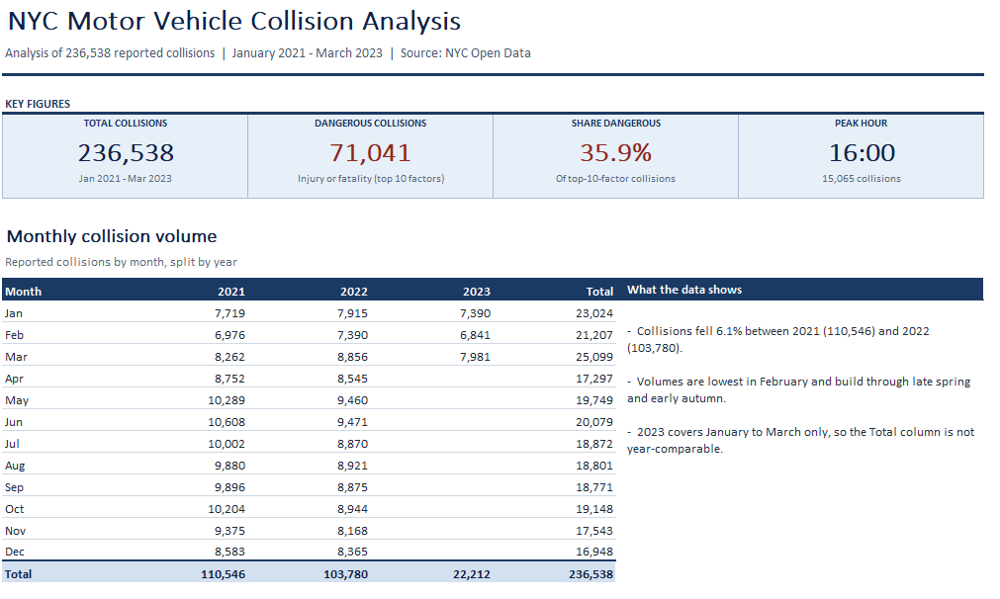

NYC motor vehicle collision analysis
The problem
NYC Open Data publishes every reported motor vehicle collision in the city — over 236,000 records for January 2021 to March 2023 alone. A raw export like that is far too large to make sense of as a table; it needs to be distilled into headline figures and trends before it means anything.
What I did
I built a one-page Excel report that summarises the dataset into four key figures — total collisions, collisions involving injury or fatality ("dangerous" collisions), the share of collisions that were dangerous, and the peak hour for collisions — alongside a monthly collision volume table split by year. I added short written takeaways alongside the table to call out the trends that stood out, such as the year-on-year change in volumes and the seasonal pattern through the year.
Further down the report, a colour-scale heatmap breaks collisions down by day of week and hour of day, making it easy to spot the riskiest times to be on the road at a glance. A second heatmap ranks the top contributing factors by the share of collisions they cause that are classed as dangerous, highlighting which causes are not just common but disproportionately severe.

The result
A single page that turns a quarter-million-row dataset into a handful of headline numbers, a clear monthly trend, and two heatmaps pinpointing when and why the most dangerous collisions happen — so the story in the data can be understood in seconds rather than by digging through raw records.